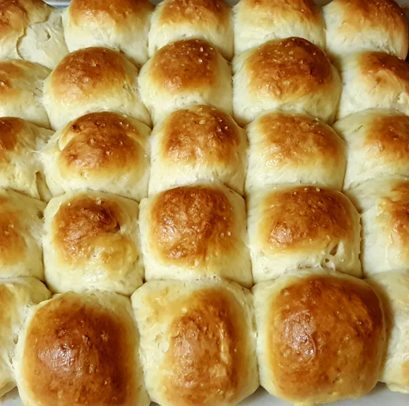

As far as holiday dinner rolls go, these are pretty lean. You can increase the amount of melted butter and toss in a egg or two, but since these are generally going to be eaten with fairly rich food, I prefer a lighter approach.
Dissolve yeast in warm water in a small bowl. Set aside in a warm place until the yeast softens and begins to form a creamy foam, 10 to 15 minutes.
Combine 1 cup milk and butter in a small saucepan over low heat. Cook until butter is melted, 3 to 4 minutes; remove pan from heat.
Combine 2 cups flour, yeast mixture, honey, 1 teaspoon salt, rosemary, and milk mixture in the bowl of a stand mixer fitted with a dough hook; mix on low until no dry spots remain. Stir in 1/2 cup flour, 2 tablespoons at a time, mixing well after each addition. Continue adding flour until a firm dough forms that pulls away from the sides of the bowl. Knead on medium until elastic and soft but still tacky, about 6 minutes. Transfer dough to a clean bowl and coat with olive oil. Cover loosely with plastic wrap or a clean dish towel and let rise in a warm spot until doubled in size, about 1 1/2 hours.
Preheat oven to 375 degrees F (190 degrees C). Line a baking sheet with parchment paper or a silicone baking mat.
Transfer dough to a work surface and shape into a rectangle about 1-inch thick. Cut into 36 equally-sized pieces. Form each piece into a ball, pinching the seams on the underside, creating a smooth, round top.
Lightly beat egg with 1 teaspoon milk in a small bowl.
Transfer dough balls to the prepared baking sheet in 3 rows of 12, placing them close together but not touching. Brush tops lightly with the egg mixture and sprinkle with sea salt. Cover and let rise in a warm place until nearly doubled, 20 to 30 minutes.
Bake in the preheated oven until golden brown, about 20 minutes.
Go back to home